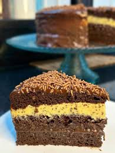
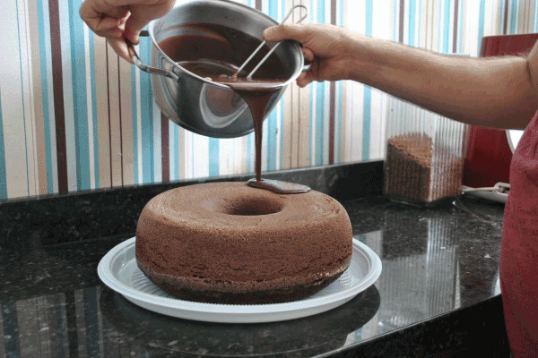

🍰Bolo de Chocolate com recheio de Maracujá 🍰

🥄Ingredientes da Massa🥄
- 4 ovos
- 1/2 xícara de chá de óleo
- 1 e 1/2 xícara de chá de açúcar mascavo
- 1 xícara de chá de leite morno
- 1 colher de chá de essência de baunilha
- 1 e 1/2 xícara de chá de farinha de trigo
- 1 xícara de chá de chocolate em pó 50%
- 1 colher de sopa de fermento químico em pó
- 1 colher de chá de bicarbonato
🥄Ingredientes Recheio e Cobertura🥄
- 1 lata de leite condensado
- 5 colheres de sopa de chocolate em pó 50%
- 1/2 caixinha de creme de leite
- 1 colher de sopa de manteiga
- 2 maracujás reduzidos em fogo baixo
- 1 lata de leite condensado
- 2 colheres de sopa de leite em pó
- 1/2 caixinha de creme de leite
- 1 colher de sopa de manteiga
- 3 barras de 80 gramas de chocolate
- 1 caixinha de creme de leite
👩🍳Modo de Preparo👩🍳
- Em um liquidificador, bata os ovos, óleo, açúcar mascavo, leite morno e baunilha por 3 minutos.
- Em uma tigela, peneire a farinha, chocolate em pó, bicarbonato e fermento. Misture tudo.
- Adicione o conteúdo do liquidificador na tigela. Misture até a massa ficar homogênea.
- Transfira a massa para uma forma untada e leve para assar em forno preaquecido a 180°C até assar.
- Para o brigadeiro, basta misturar o leite condensado, chocolate em pó, creme de leite e manteiga.
- Leve para ferver em uma panela. Conte 3 minutos e desligue o fogo. Deixe esfriar e reserve.
- Para o recheio de maracujá, misture os maracujás reduzidos, leite condensado, leite em pó, creme de leite e manteiga.
- Leve o brigadeiro branco para cozinhar em fogo baixo. Quando ferver, conte 4 minutos e desligue o fogo.
- Quando a redução de maracujá e o brigadeiro estiverem frios, misture os dois e reserve.
- Já a ganache, basta derreter o chocolate em banho-maria ou de 30 em 30 segundos no microondas.
- Depois é só acrescentar o creme de leite e reservar.
- Para a montagem, desenforme o bolo e divida em três camadas.
- Faça uma parte de bolo, uma de brigadeiro, outra de bolo, uma de maracujá e outra de bolo.
- Depois, é só finalizar com a cobertura de ganache. Bom apetite.
💕Prontinho, sua receita está pronta!!
